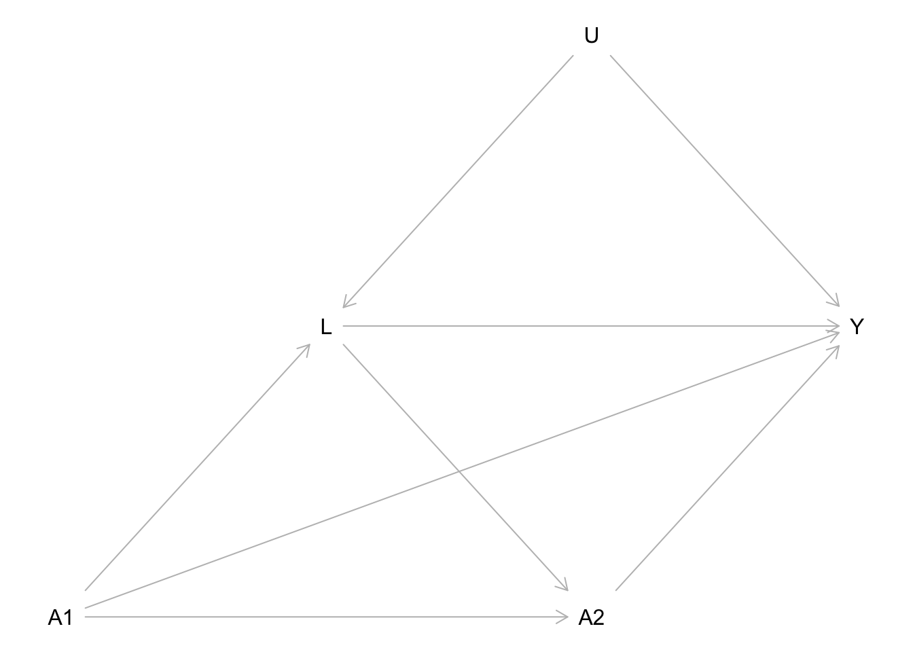

![]()
library(tidyverse)
library(dagitty)
library(brms)
library(cmdstanr)
library(tidybayes)Supplement 1: Estimate expected potential outcomes in a hypothetical RCT
Introduction of the hypothetical RCT
In our manuscript, we introduce the following hypothetical RCT in the section Different Estimands in a Longitudinal Study:
Consider a smartphone study in which participants are randomly assigned to use their smartphone from 8 PM to 10 PM (\(t = 1\)) or not. No intervention occurs afterward, which means that from 10 PM to midnight (\(t = 2\)), participants can decide for themselves whether to use their smartphone and this usage is passively recorded. We set \(a_t=1\) if there was any smartphone usage during time frame \(t\), while \(a_t=0\) means that the smartphone was not used at all during \(t\). At 10 PM, participants’ rumination (\(L\)) is also measured, as it is hypothesized to be another mediator between smartphone usage and sleep quality. Sleep quality (\(Y\)), the final outcome of the study, is measured the following morning. Figure 1 presents a DAG corresponding to this RCT.
Here in Supplement 1, we will demonstrate in R how we can simulate and estimate expected potential outcomes from this hypothetical RCT.
Demonstration in R
Load packages
For our demonstration, we need the following packages. The package versions we used are recorded in the renv.lock file in our code repository.
Specify the data generating process
Draw the DAG
The following DAG represents the assumed causal relationships for the hypothetical RCT discussed in the manuscript.
Code
dag <- dagitty('dag{
A1 -> L <- U
A1 -> A2 <- L
A1 -> Y <- A2
L -> Y <- U
A1[pos="0,2"]
A2[pos="1,2"]
Y[pos="1.5,1.5"]
L[pos="0.5,1.5"]
U[pos="1,1"]
}')
plot(dag)

Specify the functional relationships
The DAG only specifies the causal relationships, e.g., \(L\) is a function of \(A_1\) and \(U\). However, this information does not fully specify the data generating process. To simulate data, we must specify the exact functions that produce all variables. We use gaussian linear models for continuous variables (\(L\) and \(Y\)) and a probit model for the binary variable \(A_2\), while \(A_1\) is fully randomized.
In our example, \(U\) affects \(A_2\) only through the measured variable \(L\). While this assumption is unlikely to hold in real-world scenarios, it is required for joint-effect estimation. We discuss situations in which this assumption may be plausible in psychological research—induced by covariate-driven treatment assignment—in the latter half of the manuscript.
b_L_A1 <- 1
b_L_U <- 1
b_A2_A1 <- -3
b_A2_L <- 0.5
b_A2_U <- 0
b_Y_A1 <- -0.1
b_Y_A2 <- -3
b_Y_L <- -1
b_Y_A1A2 <- -0.5
b_Y_U <- -2
f_U <- function(){
rnorm(n)}
f_A1 <- function(){
rbinom(n, size = 1, prob = 0.5)}
f_L <- function(A1, U){
rnorm(n, mean = b_L_A1 * A1 + b_L_U * U)}
f_A2 <- function(A1, L){
rbinom(n, size = 1, prob = pnorm(b_A2_A1 * A1 + b_A2_L* L + b_A2_U * U))}
f_Y <- function(A1, A2, L, U){
rnorm(n, mean = 10 + b_Y_A1 * A1 + b_Y_A2 * A2 + b_Y_A1A2 * A1 * A2 + b_Y_L * L +
b_Y_U * U, sd = 0.1)} Determine the true expected potential outcomes
The manuscript focuses on joint effects, which in our example are a difference of 4 different expected potential outcomes. We will now determine the true value of all four potential outcomes using simulation. We always set \(A_1\) and \(A_2\) to the values chosen by the respective hypothetical intervention but produce the remaining variables according to the assumptions of our data generating process.
“Never use”: \(E(Y^{a_1=0, a_2=0})\)
We call the potential outcome \(Y^{a_1=0, a_2=0}\) “never use” because it represents the sleep quality of a person that (by a hypothetical intervention) was forced not to use their smartphone on both time points.
n <- 10000000
set.seed(42)
# Y_00: Y^{a_1=0, a_2=0}
U <- f_U()
A1 <- rep(0, n) # intervention
L <- f_L(A1, U)
A2 <- rep(0, n) # intervention
Y_00 <- f_Y(A1, A2, L, U)
# E(Y_00)
(E_Y_00 <- mean(Y_00))[1] 9.998539“Always use”: \(E(Y^{a_1=1, a_2=1})\)
We call the potential outcome \(Y^{a_1=1, a_2=1}\) “always use” because it represents the sleep quality of a person that (by a hypothetical intervention) was forced to use their smartphone on both time points.
n <- 10000000
set.seed(42)
# Y_11: Y^{a_1=1, a_2=1}
U <- f_U()
A1 <- rep(1, n) # intervention
L <- f_L(A1, U)
A2 <- rep(1, n) # intervention
Y_11 <- f_Y(A1, A2, L, U)
# E(Y_11)
(E_Y_11 <- mean(Y_11))[1] 5.398539“Early use”: \(E(Y^{a_1=1, a_2=0})\)
We call the potential outcome \(Y^{a_1=1, a_2=0}\) “early use” because it represents the sleep quality of a person that (by a hypothetical intervention) was forced to use their smartphone on the first time point but not on the second time point.
n <- 10000000
set.seed(42)
# Y_10: Y^{a_1=1, a_2=0}
U <- f_U()
A1 <- rep(1, n) # intervention
L <- f_L(A1, U)
A2 <- rep(0, n) # intervention
Y_10 <- f_Y(A1, A2, L, U)
# E(Y_11)
(E_Y_10 <- mean(Y_10))[1] 8.898539“Late use”: \(E(Y^{a_1=0, a_2=1})\)
We call the potential outcome \(Y^{a_1=0, a_2=1}\) “late use” because it represents the sleep quality of a person that (by a hypothetical intervention) was forced not to use their smartphone on the first time point but on the second time point.
n <- 10000000
set.seed(42)
# Y_01: Y^{a_1=0, a_2=1}
U <- f_U()
A1 <- rep(0, n) # intervention
L <- f_L(A1, U)
A2 <- rep(1, n) # intervention
Y_01 <- f_Y(A1, A2, L, U)
# E(Y_01)
(E_Y_01 <- mean(Y_01))[1] 6.998539Simulate a sample dataset
We now simulate a single dataset from our assumed data generating process. Remember, this process assumes that the smartphone usage on \(A_1\) is fully randomized, but participants can decide for themselves, whether they want to use their smartphone on \(A_2\).
n <- 2000
set.seed(42)
U <- f_U()
A1 <- f_A1()
L <- f_L(A1, U)
A2 <- f_A2(A1, L)
Y <- f_Y(A1, A2, L, U)
dat <- data.frame(A1, A2, L, Y)Fit a statistical model with brms
We now want to demonstrate how one could use the sample we just “collected” to estimate the expected potential outcomes we specified earlier. Potential Outcomes adn causal effects can be retrieved under the assumptions of consistency, exchangeability and positivity. For treatment regimes with interventions at both time points, we ensure exchangeability by leveraging the property that, given \(L\) and \(A_1\), \(A_2\) is independent of \(U\): \(P(A_2 = a_2 | A_1, L, U) = P(A_2 = a_2 | A_1, L)\).
For estimation, we use Bayesian regression models fit with the {brms} package to compute the parametric g-formula. The correctly specified regression model based on our assumed data generating process looks as follows:
set.seed(42)
bf_L <- bf(L ~ A1)
bf_Y <- bf(Y ~ A1 + A2 + A1:A2 + L)
fit <- brm(bf_L + bf_Y + set_rescor(FALSE),
data = dat, chains = 4, cores = 4, backend = "cmdstanr", refresh = 0)Running MCMC with 4 parallel chains...
Chain 1 finished in 0.2 seconds.
Chain 2 finished in 0.2 seconds.
Chain 3 finished in 0.2 seconds.
Chain 4 finished in 0.2 seconds.
All 4 chains finished successfully.
Mean chain execution time: 0.2 seconds.
Total execution time: 0.4 seconds.summary(fit) Family: MV(gaussian, gaussian)
Links: mu = identity; sigma = identity
mu = identity; sigma = identity
Formula: L ~ A1
Y ~ A1 + A2 + A1:A2 + L
Data: dat (Number of observations: 2000)
Draws: 4 chains, each with iter = 2000; warmup = 1000; thin = 1;
total post-warmup draws = 4000
Regression Coefficients:
Estimate Est.Error l-95% CI u-95% CI Rhat Bulk_ESS Tail_ESS
L_Intercept -0.06 0.04 -0.15 0.03 1.00 6379 3045
Y_Intercept 9.94 0.07 9.81 10.07 1.00 3419 2984
L_A1 1.04 0.06 0.92 1.17 1.00 6719 3107
Y_A1 0.95 0.09 0.78 1.12 1.00 2967 2975
Y_A2 -2.92 0.10 -3.11 -2.74 1.00 3263 3119
Y_L -2.00 0.02 -2.05 -1.95 1.00 4845 3227
Y_A1:A2 -0.25 0.27 -0.78 0.29 1.00 5005 3428
Further Distributional Parameters:
Estimate Est.Error l-95% CI u-95% CI Rhat Bulk_ESS Tail_ESS
sigma_L 1.42 0.02 1.38 1.47 1.00 7518 2878
sigma_Y 1.41 0.02 1.37 1.45 1.00 7069 3101
Draws were sampled using sample(hmc). For each parameter, Bulk_ESS
and Tail_ESS are effective sample size measures, and Rhat is the potential
scale reduction factor on split chains (at convergence, Rhat = 1).Note that the expected potential outcomes are not identical to the regression parameters. However, we can use these parameter to compute ubiased estimates.
Estimate the expected potential outcomes
We first extract all parameter estimates from the model fit using the tidy_draws function from the {tidybayes} package. We use our assumptions of the data generating process to reproduce the expected potential outcomes. That means, we repeat the same simulation we already used to determine the true expected outcomes. But now, we do not use the true parameter values but instead the parameter estimates we obtained from fitting our statistical model to our single sample from the data generating process.
params <- tidy_draws(fit)
N <- 10000
E_Y_est <- params |>
group_by(.draw) |>
mutate(
E_Y_00 = {
a1 <- rep(0, N)
l <- rnorm(N, b_L_Intercept + b_L_A1 * a1, sd = sigma_L)
a2 <- rep(0, N)
y <- rnorm(N, b_Y_Intercept + b_Y_A1 * a1 + b_Y_A2 * a2 + `b_Y_A1:A2` * a1 * a2 +
b_Y_L * l, sd = sigma_Y)
mean(y)},
E_Y_11 = {
a1 <- rep(1, N)
l <- rnorm(N, b_L_Intercept + b_L_A1 * a1, sd = sigma_L)
a2 <- rep(1, N)
y <- rnorm(N, b_Y_Intercept + b_Y_A1 * a1 + b_Y_A2 * a2 + `b_Y_A1:A2` * a1 * a2 +
b_Y_L * l, sd = sigma_Y)
mean(y)},
E_Y_10 = {
a1 <- rep(1, N)
l <- rnorm(N, b_L_Intercept + b_L_A1 * a1, sd = sigma_L)
a2 <- rep(0, N)
y <- rnorm(N, b_Y_Intercept + b_Y_A1 * a1 + b_Y_A2 * a2 + `b_Y_A1:A2` * a1 * a2 +
b_Y_L * l, sd = sigma_Y)
mean(y)},
E_Y_01 = {
a1 <- rep(0, N)
l <- rnorm(N, b_L_Intercept + b_L_A1 * a1, sd = sigma_L)
a2 <- rep(1, N)
y <- rnorm(N, b_Y_Intercept + b_Y_A1 * a1 + b_Y_A2 * a2 + `b_Y_A1:A2` * a1 * a2 +
b_Y_L * l, sd = sigma_Y)
mean(y)}) |>
ungroup() |>
select(E_Y_00, E_Y_11, E_Y_10, E_Y_01) |>
summarise_draws()Because we used Bayesian model estimation and extracted an approximation of the posterior distribution (4000 draws) for each model parameter, we not only get point estimates (posterior median) but can easily compute credibility intervals (symmetric .95 posterior intervals) for our estimates of the expected potential outcomes.
Table 1: Compare the true expected potential outcomes with their empirical estimates
We can now compare the true values for the 4 expected potential outcomes with our estimates. The following table is presented in the manuscript as Table 1.
Code
table <- tribble(
~"potential outcome" ,~"true value",~"estimate (med)" ,~"ci (q5)" ,~"ci (q95)",
"E(Y_00), never use" , E_Y_00 , pull(E_Y_est[1,3]) , pull(E_Y_est[1,6]) , pull(E_Y_est[1,7]),
"E(Y_11), always use", E_Y_11 , pull(E_Y_est[2,3]) , pull(E_Y_est[2,6]) , pull(E_Y_est[2,7]),
"E(Y_10), early use" , E_Y_10 , pull(E_Y_est[3,3]) , pull(E_Y_est[3,6]) , pull(E_Y_est[3,7]),
"E(Y_01), late use" , E_Y_01 , pull(E_Y_est[4,3]) , pull(E_Y_est[4,6]) , pull(E_Y_est[4,7]),
)
knitr::kable(table)| potential outcome | true value | estimate (med) | ci (q5) | ci (q95) |
|---|---|---|---|---|
| E(Y_00), never use | 9.998539 | 10.058332 | 9.872703 | 10.251214 |
| E(Y_11), always use | 5.398539 | 5.744775 | 5.277823 | 6.199982 |
| E(Y_10), early use | 8.898539 | 8.921236 | 8.753859 | 9.088567 |
| E(Y_01), late use | 6.998539 | 7.134024 | 6.951243 | 7.327404 |
Although this cannot be inferred with certainty from a single estimation, a full simulation study would show that the expected potential outcomes in our example can be estimated with minimal bias (depending on the bias-variance trade-off of the applied estimation technique).
As we describe in the manuscript, a joint effect is a difference between two expected potential outcomes under a sequence of interventions, e.g.:
\(E(Y^{a_1=1, a_2=1} - Y^{a_1=0, a_2=0}) = -4.6\)
In Supplement 2, we use the same hypothetical RCT to demonstrate how we can simulate and (try to) estimate different total, joint, and direct causal effects.
Reuse
Citation
BibTeX citation:
@article{junker2024,
author = {Junker, Lukas and Schoedel, Ramona and Pargent, Florian},
title = {Towards a {Clearer} {Understanding} of {Causal} {Estimands:}
{The} {Importance} of {Joint} {Effects} in {Longitudinal} {Designs}
with {Time-Varying} {Treatments.}},
journal = {PsyArXiv},
date = {2024},
url = {https://FlorianPargent.github.io/joint_effects_ampps/supplement_1.html},
doi = {10.31234/osf.io/zmh5a},
langid = {en}
}
For attribution, please cite this work as:
Junker, L., Schoedel, R., & Pargent, F. (2024). Towards a Clearer
Understanding of Causal Estimands: The Importance of Joint Effects in
Longitudinal Designs with Time-Varying Treatments. PsyArXiv. https://doi.org/10.31234/osf.io/zmh5a